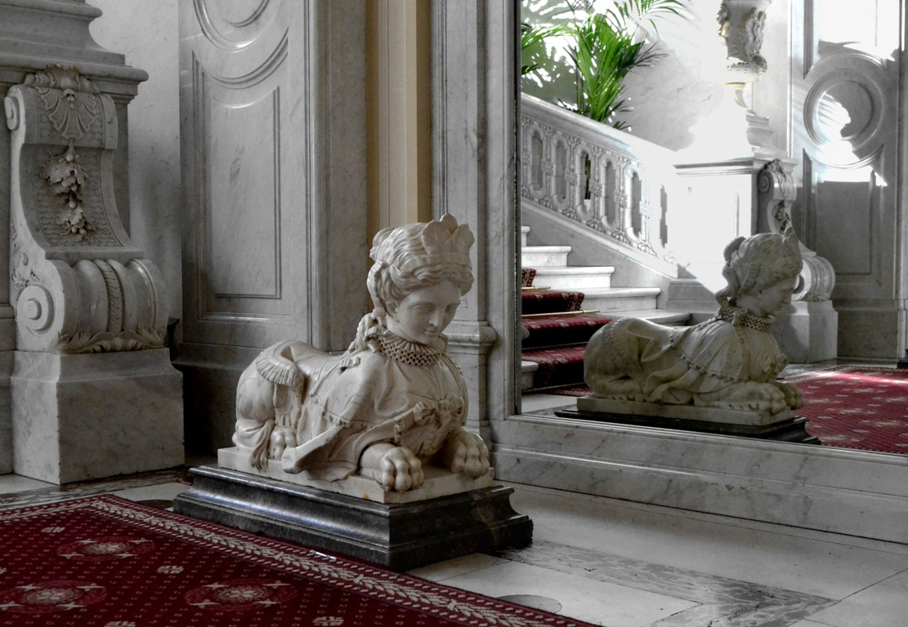
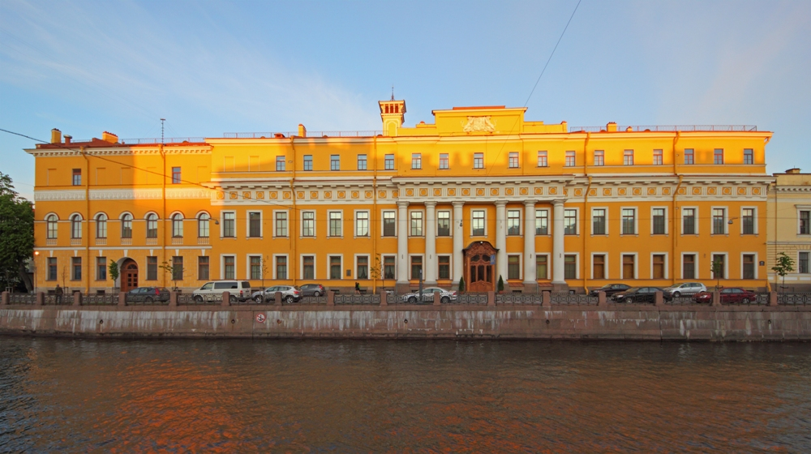
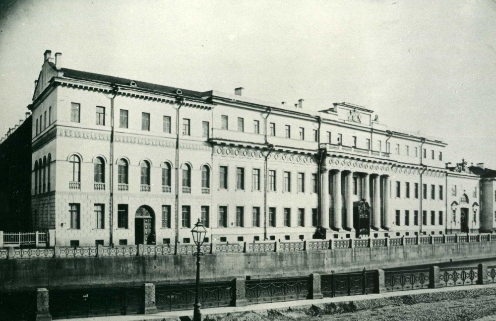
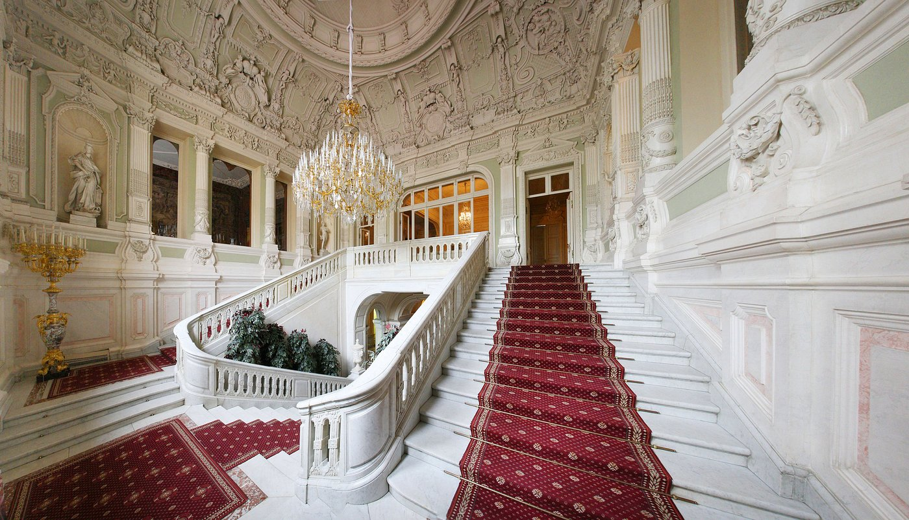

Юсуповский дворец

Легенда
Юсуповский дворец — дворянский особняк на набережной реки Мойки, основанный в 70-е годы XVIII века. Построен по проекту французского архитектора Ж.-Б. Валлена-Деламота в эклектичном стиле.

Особняк хранит мрачную историю страшного убийства, произошедшего в 1916 году. На его территории был зверски убит Г. Е. Распутин — простой крестьянин из Сибири, получивший мировую известность как друг семьи Николая II, мистическая личность, целитель и провидец. Сперва его пытались отравить в подвале дворца, но яд не подействовал, поэтому заговорщики выстрелили в старца. Однако и пуля не смогла сразу унести жизнь Распутина — он сумел выбраться во двор, где заговорщики добили его, а тело сбросили в прорубь на реке Малая Невка.

Согласно популярной легенде, посмотрев в зеркало, находящееся в покоях дворца, где произошло убийство, можно увидеть лицо убитого Григория. Говорят, что дух Распутина не покинул этих стен: по ночам в подвале слышны шаги и хриплое дыхание, а в зеркалах иногда мелькает его бородатый силуэт. Особо чувствительные посетители музея жалуются на внезапное чувство удушья в комнатах дворца — словно невидимая рука сжимает горло.
Что было на самом деле
Юсуповский дворец построен в 1770-х годах архитектором Жаном-Батистом Валленом-Деламотом для князя Юсупова. Убийство Распутина в 1916 году — исторический факт. Заговорщиками были князь Феликс Юсупов (владелец дворца), депутат Владимир Пуришкевич и великий князь Дмитрий Павлович.

Распутина действительно пытались отравить цианистым калием, но яд не подействовал — по наиболее распространённой версии, потому что был смешан со сладким вином и пирожными, что нейтрализовало действие. Затем в него выстрелили несколько раз, он пытался бежать через двор, но был добит. Тело сбросили в Малую Невку, где его позже нашли полицейские. После революции дворец был национализирован, сегодня в нём музей. Легенда о зеркале, в котором видно лицо Распутина, — популярный туристический миф, активно поддерживаемый экскурсоводами. Никаких научных подтверждений паранормальной активности во дворце нет, хотя мрачная история убийства, безусловно, создаёт особую атмосферу для впечатлительных посетителей.
← Назад к карте